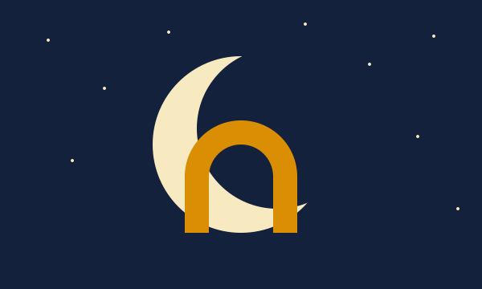

Our Story

Midnight Mustang started with a simple idea: late nights are better with company. Michael noticed that after the library closes, there are very few places left where students can sit, talk, and unwind without spending much.
Chess was the obvious answer. It needs no screen, it is easy to start, and a good game makes strangers friends. Hot chocolate made the rest of the plan easy, because everyone is warmer and happier with a cup in their hands.
The result is a cart built around a slow, friendly kind of evening. The horseshoe in the logo is for luck, and the moon is a reminder that the best conversations often happen after midnight.